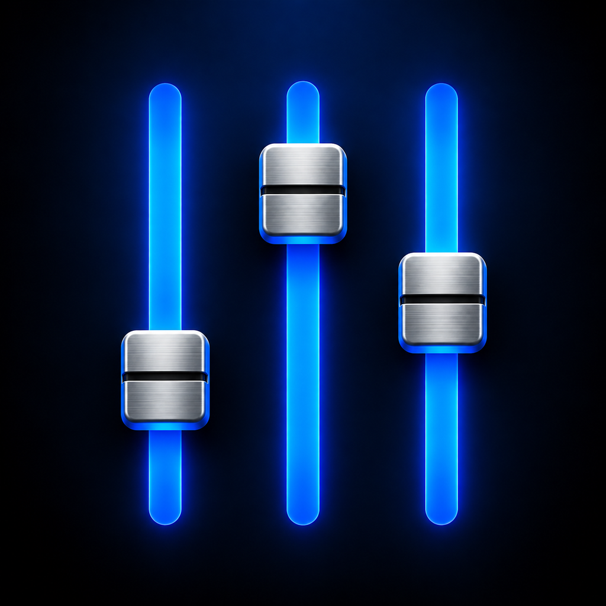

Just the sends you need
Adjust input-to-aux levels with blue faders, silver handles and a visible 0 dB reference. Search inputs, browse channel banks, and show pan for stereo auxes.

QUANTUM AUXPERSONAL MONITOR CONTROL
Give every musician their own aux mix.
Real console names. Blue faders. A clear, focused interface on the device already in their hands.
Windows bridge · iOS host · Musician web interface
PERSONAL MIXER
Try a fader. This illustration runs locally and does not connect to a console.
BUILT AROUND THE MUSICIAN
Adjust input-to-aux levels with blue faders, silver handles and a visible 0 dB reference. Search inputs, browse channel banks, and show pan for stereo auxes.
The bridge discovers channel and aux names and reads send levels from the console. Unsynced or stale controls pause until valid feedback returns.
Choose any available aux without entering a code. An occupied mix is reserved for its browser session. Closing or hiding the page requests release; a 30-second lease is the fallback.
TWO WAYS TO HOST
The public website provides downloads and guidance. The mixer itself runs on your local network.
Start-Windows.bat or Start-Windows.vbs. First launch downloads a private Python runtime.http://localhost:8765/setup. Enter the console IP and matching UDP ports.http://PC-LAN-IP:8765 on the same network and choose a free mix.Tray green means the console connection is opened. Live console feedback is reported separately.
The iOS bridge stops when the host app goes into the background. Reopen it and start the bridge again.
Enable External Control, add a DiGiCo Pad device for the bridge’s IP address, and load the iPad command set for your console software. Match the console’s send port to the bridge receive port, and its receive port to the bridge send port.
Defaults: console receive 8000 · bridge receive 9000 · musician web port 8765.
PROJECT DOWNLOADS
Packaged project snapshot · 13 October 2026. Keep your existing console settings when upgrading.
Python server, automatic runtime downloader, windowless launcher, tray indicator and musician UI.
Embedded app icon, modern musician UI and release-on-hide behavior. Requires signing before installation.
Existing native engine: up to 256 inputs / 128 bus entries. Expanded limits are not compiled into this IPA.
Download unsigned IPA ↓Swift project with expanded discovery, connection-status updates, icon assets and a GitHub Actions build workflow.
Up to 512 inputs / 256 bus entries accepted by discovery. Requires an Xcode build and signing.
Download source ZIP ↓COMPATIBILITY & PROJECT STATUS
The bridge uses the DiGiCo Pad SD/Quantum protocol and discovers the desk’s actual layout. Quantum 112, 225, 326, 338, 5, 7 and 852 families are compatibility targets, including variants that expose the same commands.
Compatibility depends on firmware and the selected command map. This is an independent project, not DiGiCo-certified software or a guarantee of support for every model.
The Windows backend passed 16 automated tests, including a simulated 384-input / 192-bus configuration. The updated IPA’s resources and release logic were checked.
Physical-console, Windows desktop and iOS device acceptance testing remain necessary. Only mono/stereo aux sends are controlled; there is no audio streaming, EQ, scene control or surround-bus control.
GOOD TO KNOW
One browser session reserves each aux. Other sessions see it as in use. This does not prevent changes from the physical console or other control software.
The page requests release when it closes or becomes hidden, including app switching. On return, the musician selects a mix again. If the device cannot deliver that request, the reservation expires after 30 seconds without renewal.
Check that the installed bridge is serving the new package, restart the host, and open its displayed LAN address in a fresh tab. The current musician page displays UI 1.0.3. A different PC or phone may still be running an older bridge.
No. This site distributes the app and documentation. Console communication requires the Windows or iOS bridge on the console’s local network. Keep the bridge on a trusted network rather than exposing it to the internet.